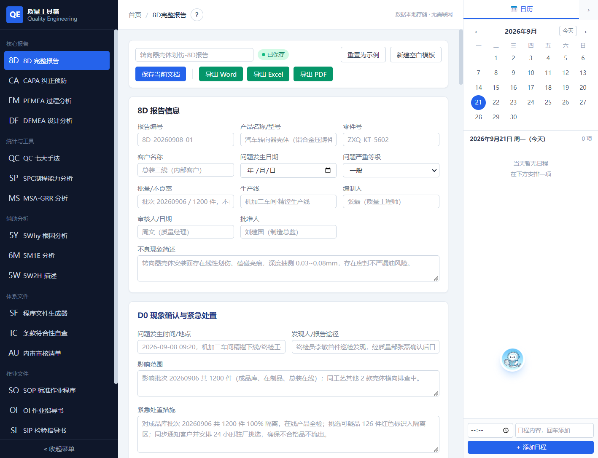
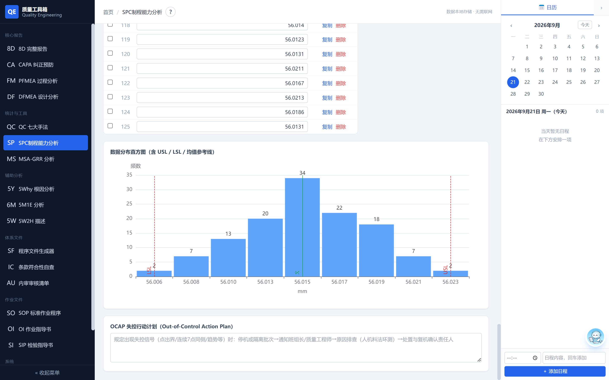
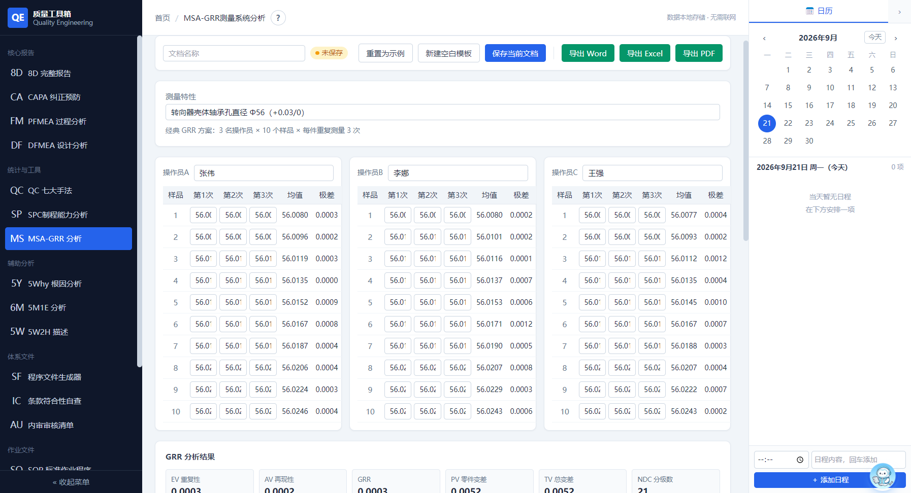
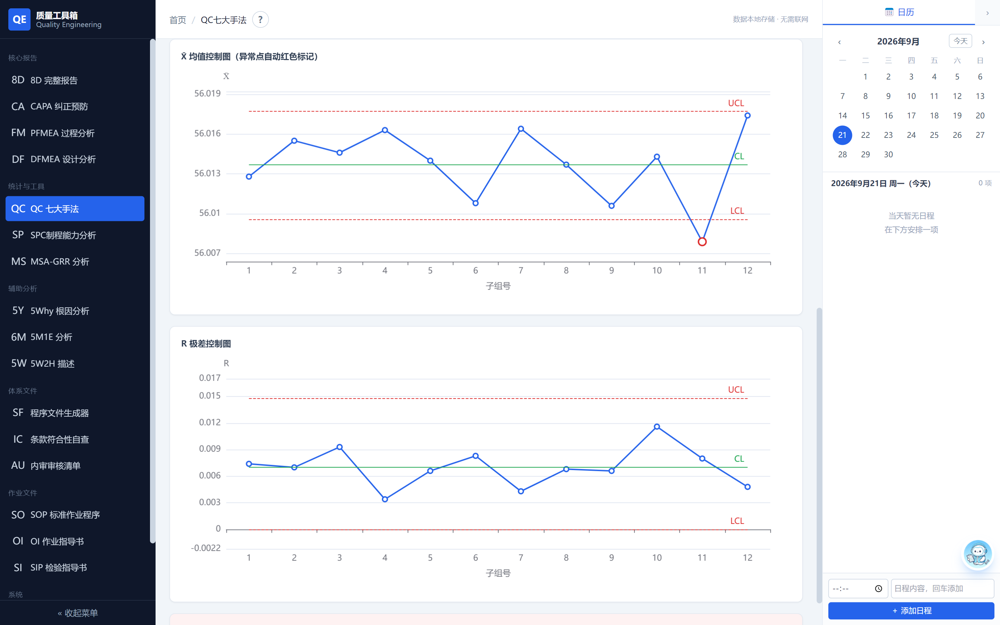
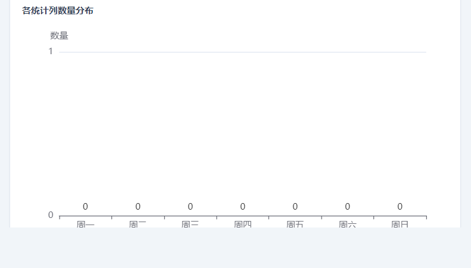

核心功能
覆盖质量工程师日常工作全流程
8D 完整报告
D0-D8 全流程，内嵌 5Why 根因分析与鱼骨图，支持图片粘贴，一键导出 Word / Excel / PDF。
SPC 制程能力
2026 新版：支持 Pm/Pmk、Pp/Ppk、Cp/Cpk 三种研究，X-R 控制图、正态性检验、OCAP 行动计划全包含。
MSA 测量分析
GRR 重复性与再现性分析，ndc / %PV / 方差分量，自动判定合格与否。
PFMEA / DFMEA
失效模式与影响分析，S/O/D 评分与 RPN 计算，措施跟踪闭环。
QC 七大手法
检查表、柏拉图、直方图、散布图、层别法、X-R 控制图、鱼骨图，列可自定义。
AI 助手
内嵌 AI 助手，自动填写字段、生成测试数据、识别图表给建议，支持自定义模型地址。
AI 质量助手
你的质量工程师副驾。说一句话，AI 自动填好 SPC 数据、8D 报告根因、FMEA 措施——不再从零开始。
界面预览
真实数据填充，所见即所得





发布历史
持续迭代，越用越好用
-
v2.2.5 最新
AI 助手填写全面升级：8D 补齐 D1~D6 全部字段（团队/遏制/5Why/永久措施/实施记录），新增 QC 直方图、散布图、层别法、鱼骨图与 MSA 操作员数据填写；修复图表横轴文字显示不全；窗口缩放时日历与 AI 面板不再被遮挡。
-
v2.2.4
界面三栏布局优化：AI 助手面板可嵌入主区域与日历栏之间并自由拖宽，日历栏支持折叠，主区域与各面板增加最小宽度限制。
-
v2.2.3
AI 助手聊天面板稳定性修复；新增 AI 一句话自动填表（识别 [OP] 指令直接写入对应页面字段）。
-
v2.2.2
SPC 2026 新版：新增 Pm/Pmk 机器性能研究、Pp/Ppk 初始过程研究与正态性检验；Gitee 直链下载加速。
常见问题
需要联网吗？数据会上传吗？ ▾
不需要。软件完全本地运行，所有文档与设置存储在本机，不联网、不上传、无账号、无广告。
安装版和便携版有什么区别？ ▾
安装版通过标准安装程序部署，含桌面快捷方式、开始菜单与卸载入口；便携版是单文件 exe，双击即运行，无需安装，适合 U 盘携带或临时使用。
支持哪些操作系统？ ▾
目前仅支持 Windows 10 / 11（64 位）。
AI 助手需要付费吗？ ▾
软件本身免费。AI 助手需要你自行申请 API Key（内置 Agnes 2.5 Flash 等快捷预设），费用由服务商收取。